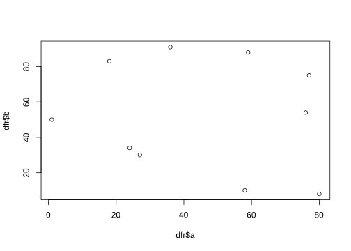
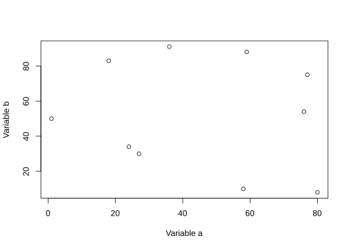
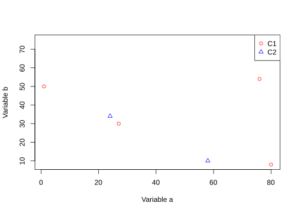
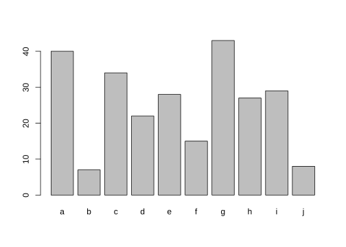
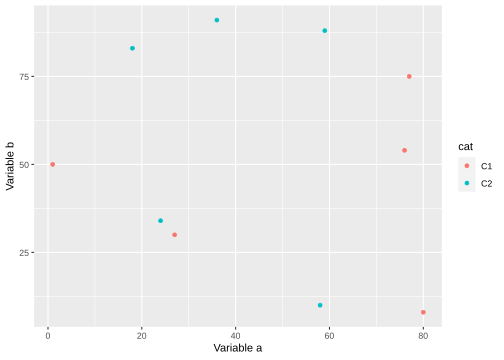
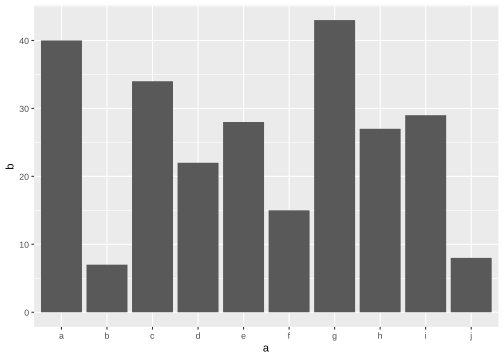

R is a programming language for statistical computing, and data wrangling. It is open-source, widely used in data science, has a wide range of functions and algorithms for graphing and data analyses.
Variables are assigned usually using the <- operator. The = operator also works in a similar way for most part.
x <- 4
x = 4
x## [1] 4The commonly used arithmetic operators are shown below returning a number.
x <- 4
y <- 2
# add
x + y
# subtract
x - y
# multiply
x * y
# divide
x / y
# modulus
x %% y
# power
x ^ y## [1] 6
## [1] 2
## [1] 8
## [1] 2
## [1] 0
## [1] 16Logical operators return a logical TRUE or FALSE.
# equal to?
x == y
# not equal to?
x != y
# greater than?
x > y
# less than?
x < y
# greater than or equal to?
x >= y
# less than or equal to?
x <= y## [1] FALSE
## [1] TRUE
## [1] TRUE
## [1] FALSE
## [1] TRUE
## [1] FALSEclass(1)
class("hello")
class(T)## [1] "numeric"
## [1] "character"
## [1] "logical"x <- c(2,3,4,5,6)
y <- c("a","c","d","e")
z <- factor(c("a","c","d","e"))
class(z)## [1] "factor"x <- matrix(c(2,3,4,5,6,7),nrow=3,ncol=2)
class(x)
str(x)## [1] "matrix" "array"
## num [1:3, 1:2] 2 3 4 5 6 7dfr <- data.frame(x = 1:3, y = c("a", "b", "c"))
print(dfr)## x y
## 1 1 a
## 2 2 b
## 3 3 cclass(dfr)## [1] "data.frame"str(dfr)## 'data.frame': 3 obs. of 2 variables:
## $ x: int 1 2 3
## $ y: chr "a" "b" "c"Vectors positions can be accessed using []. R follows 1-based indexing.
x <- c(2,3,4,5,6)
x
x[2]## [1] 2 3 4 5 6
## [1] 3Dataframe or matrix positions can be accessed using [] specifying row and column like [row,column].
dfr <- data.frame(x = 1:3, y = c("a", "b", "c"))
dfr
dfr[1,]
dfr[,1]
dfr[2,2]## x y
## 1 1 a
## 2 2 b
## 3 3 c
## x y
## 1 1 a
## [1] 1 2 3
## [1] "b"# generate 10 random numbers between 1 and 200
x <- sample(x=1:200,10)
x
# length
length(x)
# sum
sum(x)
# mean
mean(x)
# median
median(x)
# min
min(x)
# log
log(x)
# exponent
exp(x)
# square-root
sqrt(x)
# round
round(x)
# sort
sort(x)## [1] 123 10 132 148 168 48 81 158 34 196
## [1] 10
## [1] 1098
## [1] 109.8
## [1] 127.5
## [1] 10
## [1] 4.812184 2.302585 4.882802 4.997212 5.123964 3.871201 4.394449 5.062595
## [9] 3.526361 5.278115
## [1] 2.619517e+53 2.202647e+04 2.122617e+57 1.886181e+64 9.151093e+72
## [6] 7.016736e+20 1.506097e+35 4.154590e+68 5.834617e+14 1.323483e+85
## [1] 11.090537 3.162278 11.489125 12.165525 12.961481 6.928203 9.000000
## [8] 12.569805 5.830952 14.000000
## [1] 123 10 132 148 168 48 81 158 34 196
## [1] 10 34 48 81 123 132 148 158 168 196Some useful string functions.
a <- "sunny"
b <- "day"
# join
paste(a, b)
# find a pattern
grep("sun", a)
# number of characters
nchar("sunny")
# to uppercase
toupper("sunny")
# to lowercase
tolower("SUNNY")
# replace pattern
sub("sun", "fun", "sunny")
# substring
substr("sunny", start=1, stop=3)## [1] "sunny day"
## [1] 1
## [1] 5
## [1] "SUNNY"
## [1] "sunny"
## [1] "funny"
## [1] "sun"Some general functions
print("hello")
print("world")
cat("hello")
cat(" world")
cat("\nhello\nworld")## [1] "hello"
## [1] "world"
## hello world
## hello
## worldTwo strings can be joined together using paste().
a <- "sunny"
b <- "day"
paste(a, b)
paste(a, b, sep="-")## [1] "sunny day"
## [1] "sunny-day"The function c() is used to concatenate objects.
a <- "sunny"
b <- "day"
c(a,b)## [1] "sunny" "day"The function cbind() is used to join two dataframes column-wise.
dfr1 <- data.frame(x = 1:3, y = c("a", "b", "c"))
dfr2 <- data.frame(p = 4:6, q = c("d", "e", "f"))
dfr1
dfr2
cbind(dfr1,dfr2)## x y
## 1 1 a
## 2 2 b
## 3 3 c
## p q
## 1 4 d
## 2 5 e
## 3 6 f
## x y p q
## 1 1 a 4 d
## 2 2 b 5 e
## 3 3 c 6 fSimilarily, rbind() is used to join two dataframes row-wise.
dfr1 <- data.frame(x = 1:3, y = c("a", "b", "c"))
dfr2 <- data.frame(x = 4:6, y = c("d", "e", "f"))
dfr1
dfr2
rbind(dfr1,dfr2)## x y
## 1 1 a
## 2 2 b
## 3 3 c
## x y
## 1 4 d
## 2 5 e
## 3 6 f
## x y
## 1 1 a
## 2 2 b
## 3 3 c
## 4 4 d
## 5 5 e
## 6 6 fTwo dataframes can be merged based on a shared column using the merge() function.
dfr1 <- data.frame(x = 1:4, p = c("a", "b", "c","d"))
dfr2 <- data.frame(x = 3:6, q = c("l", "m", "n","o"))
dfr1
dfr2
merge(dfr1,dfr2,by="x")
merge(dfr1,dfr2,by="x",all.x=T)
merge(dfr1,dfr2,by="x",all.y=T)
merge(dfr1,dfr2,by="x",all=T)## x p
## 1 1 a
## 2 2 b
## 3 3 c
## 4 4 d
## x q
## 1 3 l
## 2 4 m
## 3 5 n
## 4 6 o
## x p q
## 1 3 c l
## 2 4 d m
## x p q
## 1 1 a <NA>
## 2 2 b <NA>
## 3 3 c l
## 4 4 d m
## x p q
## 1 3 c l
## 2 4 d m
## 3 5 <NA> n
## 4 6 <NA> o
## x p q
## 1 1 a <NA>
## 2 2 b <NA>
## 3 3 c l
## 4 4 d m
## 5 5 <NA> n
## 6 6 <NA> oR packages extend the functionality of base R. R packages are stored in repositories of which the most commonly used is called CRAN (The Comprehensive R Archive Network).
Packages are installed using the function install.packages(). Let’s install the graphics and plotting package ggplot2 which will be useful in later sections.
install.packages("ggplot2",dependencies=TRUE)Packages on BioConductor can be installed as follows:
source("https://bioconductor.org/biocLite.R")
biocLite("biomaRt")Packages on GitHub can be installed using the function install_github() from package devtools.
Packages can also be installed from a local zipped file by providing a local path ans setting type="source".
install.packages("./dir/package.zip",type="source")Inside RStudio, installing packages is much easier. Go to the Packages tab and click Install. In the window that opens up, you can find your package by typing into the Packages field and clicking Install. Bioconductor packages can be added to this list by setting it using setRepositories().
R is an excellent tool for creating graphs and plots. The graphic capabilities and functions provided by the base R installation is called the base R graphics. Numerous packages exist to extend the functionality of base graphics.
We can try out plotting a few of the common plot types. Let’s start with a scatterplot. First we create a data.frame as this is the most commonly used data object.
dfr <- data.frame(a=sample(1:100,10),b=sample(1:100,10))Now we have a dataframe with two continuous variables that can be plotted against each other.
plot(dfr$a,dfr$b)
This is probably the simplest and most basic plots. We can modify the x and y axis labels.
plot(dfr$a,dfr$b,xlab="Variable a",ylab="Variable b")
We can change the point to a line.
plot(dfr$a,dfr$b,xlab="Variable a",ylab="Variable b",type="b")Let’s add a categorical column to our dataframe.
dfr$cat <- rep(c("C1","C2"),each=5)And then colour the points by category.
# subset data
dfr_c1 <- subset(dfr,dfr$cat == "C1")
dfr_c2 <- subset(dfr,dfr$cat == "C2")
plot(dfr_c1$a,dfr_c1$b,xlab="Variable a",ylab="Variable b",col="red",pch=1)
points(dfr_c2$a,dfr_c2$b,col="blue",pch=2)
legend(x="topright",legend=c("C1","C2"),
col=c("red","blue"),pch=c(1,2))
Let’s create a barplot.
ldr <- data.frame(a=letters[1:10],b=sample(1:50,10))
barplot(ldr$b,names.arg=ldr$a)
Grid graphics have a completely different underlying framework compared to base graphics. Generally, base graphics and grid graphics cannot be plotted together. The most popular grid-graphics based plotting library is ggplot2.
Let’s create the same plot are before using ggplot2. Make sure you have the package installed.
library(ggplot2)
ggplot(dfr,aes(x=a,y=b,colour=cat))+
geom_point()+
labs(x="Variable a",y="Variable b")
It is generally easier and more consistent to create plots using the ggplot2 package compared to the base graphics.
Let’s create a barplot as well.
ggplot(ldr,aes(x=a,y=b))+
geom_bar(stat="identity")
Input and output of data and images is an important aspect with data analysis.
Data can come in a variety of formats which needs to be read into R and converted to an R data type.
Text files are the most commonly used input. Text files can be read in using the function read.table. We have a sample file to use: iris.txt.
dfr <- read.table("iris.txt",header=TRUE,stringsAsFactors=F)This reads in a tab-delimited text file with a header. The argument sep='\t' is set by default to specify that the delimiter is a tab. stringsAsFactors=F setting ensures that character columns are not automatically converted to factors.
It’s always a good idea to check the data after import.
head(dfr)str(dfr)Check ?read.table for other wrapper functions to read in text files.
Let’s filter this data.frame and create a new dataset.
dfr1 <- dfr[dfr$Species == "setosa",]And we can write this as a text file.
write.table(dfr1,"iris-setosa.txt",sep="\t",row.names=F,quote=F)sep="\t" sets the delimiter to tab. row.names=F denotes that rownames should not be written. quote=F specifies that doubles must not be placed around strings.
Let’s take a look at saving plots.
The general idea for saving plots is open a graphics device, create the plot and then close the device. We will use png here. Check out ?png for the arguments and other devices.
dfr <- data.frame(a=sample(1:100,10),b=sample(1:100,10))
png(filename="plot-base.png")
plot(dfr$a,dfr$b)
dev.off()The same idea can be applied to ggplot2, but in a slightly different way. First save the file to a variable, and then export the plot.
p <- ggplot(dfr,aes(a,b)) + geom_point()
png(filename="plot-ggplot-1.png")
print(p)
dev.off()ggplot2 also has another easier helper function to export images.
ggsave(filename="plot-ggplot-2.png",plot=p)?function to get function documentation??bla to search for a functionargs(function) to get the arguments to a function## R version 4.0.5 (2021-03-31)
## Platform: x86_64-pc-linux-gnu (64-bit)
## Running under: Ubuntu 18.04.6 LTS
##
## Matrix products: default
## BLAS: /usr/lib/x86_64-linux-gnu/openblas/libblas.so.3
## LAPACK: /usr/lib/x86_64-linux-gnu/libopenblasp-r0.2.20.so
##
## locale:
## [1] LC_CTYPE=C.UTF-8 LC_NUMERIC=C LC_TIME=C.UTF-8
## [4] LC_COLLATE=C.UTF-8 LC_MONETARY=C.UTF-8 LC_MESSAGES=C.UTF-8
## [7] LC_PAPER=C.UTF-8 LC_NAME=C LC_ADDRESS=C
## [10] LC_TELEPHONE=C LC_MEASUREMENT=C.UTF-8 LC_IDENTIFICATION=C
##
## attached base packages:
## [1] parallel stats4 stats graphics grDevices utils datasets
## [8] methods base
##
## other attached packages:
## [1] stringr_1.4.0 scales_1.1.1
## [3] fgsea_1.16.0 enrichR_3.0
## [5] rafalib_1.0.0 pvclust_2.2-0
## [7] pheatmap_1.0.12 biomaRt_2.46.3
## [9] edgeR_3.32.1 limma_3.46.0
## [11] DESeq2_1.30.1 SummarizedExperiment_1.20.0
## [13] Biobase_2.50.0 MatrixGenerics_1.2.1
## [15] matrixStats_0.61.0 GenomicRanges_1.42.0
## [17] GenomeInfoDb_1.26.7 IRanges_2.24.1
## [19] S4Vectors_0.28.1 BiocGenerics_0.36.1
## [21] ggplot2_3.3.5 formattable_0.2.1
## [23] kableExtra_1.3.4 dplyr_1.0.7
## [25] lubridate_1.8.0 yaml_2.2.1
## [27] fontawesome_0.2.2.9000 captioner_2.2.3
## [29] bookdown_0.24 knitr_1.36
##
## loaded via a namespace (and not attached):
## [1] nlme_3.1-152 bitops_1.0-7 bit64_4.0.5
## [4] progress_1.2.2 webshot_0.5.2 RColorBrewer_1.1-2
## [7] httr_1.4.2 tools_4.0.5 utf8_1.2.2
## [10] R6_2.5.1 DBI_1.1.1 mgcv_1.8-34
## [13] colorspace_2.0-2 withr_2.4.2 gridExtra_2.3
## [16] prettyunits_1.1.1 tidyselect_1.1.1 curl_4.3.2
## [19] bit_4.0.4 compiler_4.0.5 rvest_1.0.2
## [22] xml2_1.3.2 DelayedArray_0.16.3 labeling_0.4.2
## [25] genefilter_1.72.1 askpass_1.1 rappdirs_0.3.3
## [28] systemfonts_1.0.3 digest_0.6.28 rmarkdown_2.11
## [31] svglite_2.0.0 XVector_0.30.0 pkgconfig_2.0.3
## [34] htmltools_0.5.2 dbplyr_2.1.1 fastmap_1.1.0
## [37] highr_0.9 htmlwidgets_1.5.4 rlang_0.4.12
## [40] rstudioapi_0.13 RSQLite_2.2.8 farver_2.1.0
## [43] jquerylib_0.1.4 generics_0.1.1 BiocParallel_1.24.1
## [46] RCurl_1.98-1.5 magrittr_2.0.1 GenomeInfoDbData_1.2.4
## [49] Matrix_1.3-2 Rcpp_1.0.7 munsell_0.5.0
## [52] fansi_0.5.0 lifecycle_1.0.1 stringi_1.7.5
## [55] zlibbioc_1.36.0 BiocFileCache_1.14.0 grid_4.0.5
## [58] blob_1.2.2 crayon_1.4.1 lattice_0.20-41
## [61] splines_4.0.5 annotate_1.68.0 hms_1.1.1
## [64] locfit_1.5-9.4 pillar_1.6.4 rjson_0.2.20
## [67] geneplotter_1.68.0 fastmatch_1.1-3 XML_3.99-0.8
## [70] glue_1.4.2 evaluate_0.14 data.table_1.14.2
## [73] vctrs_0.3.8 openssl_1.4.5 gtable_0.3.0
## [76] purrr_0.3.4 tidyr_1.1.4 assertthat_0.2.1
## [79] cachem_1.0.6 xfun_0.27 xtable_1.8-4
## [82] survival_3.2-10 viridisLite_0.4.0 tibble_3.1.5
## [85] AnnotationDbi_1.52.0 memoise_2.0.0 ellipsis_0.3.2